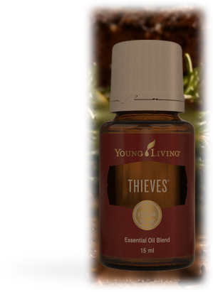
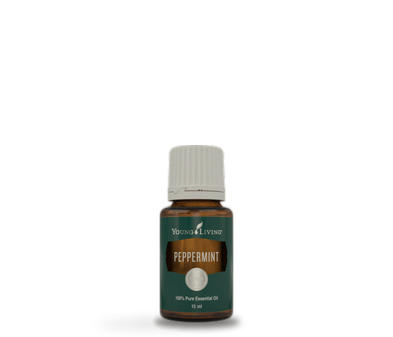
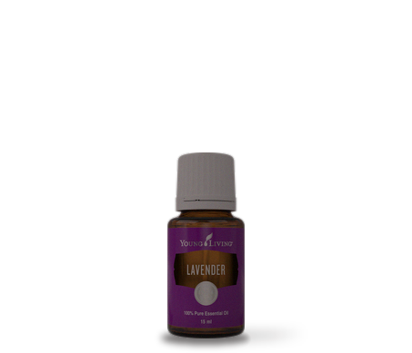
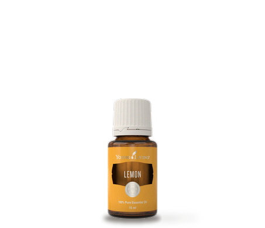
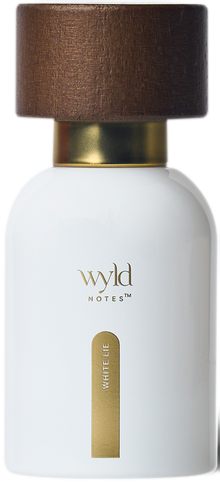
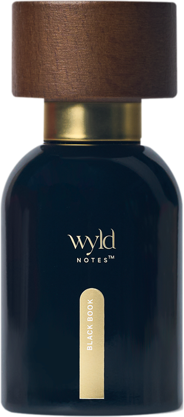
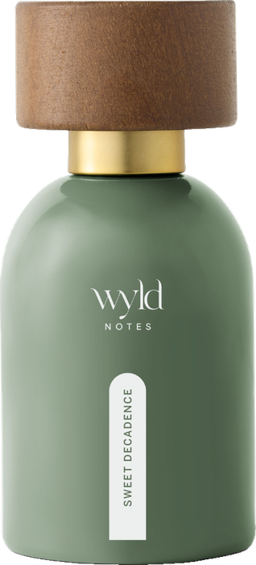
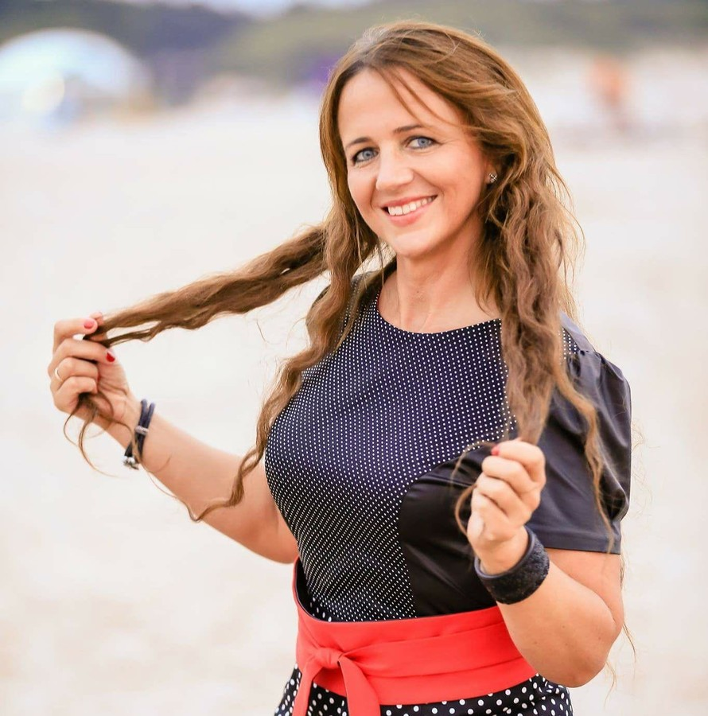

Thieves
mišinys
Šiltas, prieskoninis kvapas, lyg ką tik būtų iškeptas pyragas su gvazdikėliais ir cinamonu.
Kada: rudenį ir žiemą, kai norisi jaukesnių namų.
UžsisakytiKaip kasdien naudoti eterinius aliejus ir kaip juos užsisakyti pačiam, kai baigiasi.
Aliejus patiko, naudojai, o kai baigėsi, naujas taip ir neatsirado.
Dažniausiai ne todėl, kad jo nebereikia, o todėl, kad pamiršti arba nežinai, kaip užsisakyti. Čia rasi, kaip naudoti tai, ką jau turi, ir kaip užsisakyti pačiam, kada tau patogu.
Šituos keturis dažniausiai siūlau pradedantiesiems. Jų užtenka namų kvapui, vakaro ramybei ir mažiems kasdieniams ritualams.

Šiltas, prieskoninis kvapas, lyg ką tik būtų iškeptas pyragas su gvazdikėliais ir cinamonu.
Kada: rudenį ir žiemą, kai norisi jaukesnių namų.
Užsisakyti
Gaivus, vėsus kvapas. Pabunda ir kambarys, ir tas, kas jame sėdi.
Kada: ryte arba prie darbo stalo, kai reikia susikaupti. Kvapas stiprus, todėl užtenka kelių lašų.
Užsisakyti
Švelnus, ramus kvapas — nuo jo dažniausiai ir pradedama.
Kada: vakare, kai nurimsta dienos šurmulys. Garintuvą išjunk prieš miegą.
Užsisakyti
Ryškus, citrusinis ir gaivus kvapas. Young Living jį vadina „saulės spinduliais buteliuke“.
Kada: ryte, kai norisi žvalumo. Jei tepi ant odos, iki 12 valandų po to venk saulės.
UžsisakytiPer Raindrop aliejai po lašą lašinami išilgai nugaros ir švelniai paskirstomi pirštų galais. Namuose jį daro vienas šeimos narys kitam, ramiai, neskubant.
Kam jis? Šį būdą sukūrė Young Living įkūrėjas D. Gary Young, kad būtų galima „harmonizuoti, atgaivinti, atpalaiduoti ir suderinti kūną bei protą“. Sumanymą įkvėpė indėnų tradicija: jie stebėdavo Šiaurės pašvaistę, giliai kvėpuodami spygliuočių aromatu.
Rinkinio aliejai, gamintojo žodžiais, „sukuria dvasingumo ir ramybės atmosferą“. Gamintojas atvirai sako ir tai, kad kiekvienas Raindrop patiria savaip.
Tam nereikia nei ypatingo pasiruošimo, nei kur nors važiuoti. Užtenka rinkinio ir maždaug valandos vienas kitam.
Tegul Raindrop nebūna proga kartą per metus, o tampa įpročiu tiems vakarams, kai norisi sustoti, atsipalaiduoti ir skirti laiko sau. Tai valanda tik tau ir artimam žmogui, kai niekur nereikia skubėti.
Visa eiga — dviem trumpais vaizdo įrašais: pirma padai, tada nugara. Lašų skaičius ir judesiai — tokie, kaip nurodyta rinkinio lankstinuke.
Young Living turi atskirą Raindrop rinkinį, kuriame yra visi reikalingi aliejai. Kai kurie iš jų stiprūs, todėl prieš pirmą kartą perskaityk rinkinio aprašymą ir atsargumo nurodymus. Rinkinį rasi Young Living puslapyje per mano nuorodą.
Užsisakyti Raindrop rinkinį (Young Living)
Plaukams turime šampūną, kondicionierių, kaukę, o galvos oda dažniausiai lieka be jokios priežiūros.
Mišinį naudoti 2–3 kartus per savaitę, įtrinant į galvos odą 10–20 min. prieš galvos plovimą.
Švelnus, pudrinis grakštumas su paslaptimi

Wyld NOTES · 30 ml
Švelnus, pudrinis grakštumas su paslaptimi
Nuotraukos ir aprašymas: Wyld NOTES
Prieskoniniai šešėliai ir magnetiška intriga

Wyld NOTES · 30 ml
Prieskoniniai šešėliai ir magnetiška intriga
Nuotraukos ir aprašymas: Wyld NOTES
Įkvėptas ką tik iškeptų kepinių ir riešutų skanėsto

Wyld NOTES · 30 ml
Įkvėptas ką tik iškeptų kepinių ir riešutų skanėsto
Nuotraukos ir aprašymas: Wyld NOTES
Kelionė per miškus ir saulės nutviekstus kraštovaizdžius
Wyld NOTES · 30 ml
Kelionė per miškus ir saulės nutviekstus kraštovaizdžius
Nuotraukos ir aprašymas: Wyld NOTES
Gamintojas sako, kad prabangūs kvepalai gali būti natūralūs, o jų sudėtis — visiškai atvira.
Laikui bėgant kvapo natos keičiasi. Viršutinės natos — pirmas įspūdis: dažniausiai lengvos, gaivios ar citrusinės, išgaruoja per pirmąsias 15–30 minučių. Joms nykstant atsiskleidžia vidurinės natos — kvapo šerdis: sodresni gėlių, prieskonių ar žolelių kvapai, kurie išlieka 2–4 valandas. Bazinės natos suteikia gylio ir ilgiausiai išlieka: šilti medienos ar muskuso kvapai ant odos, drabužių ar plaukų laikosi 6 valandas ir ilgiau, kartais net kelias dienas. Trukmė priklauso nuo kvapo ir nuo to, kaip jis užpurškiamas. Taip kvapas atsiskleidžia sluoksnis po sluoksnio.
Kiekvieno kvapo natos pasirodys užvedus pelę ant lašiuko prie buteliuko (telefone — palietus).
Pirmą kartą užsakydamas Wyld NOTES svetainėje, prieš apmokėdamas įvesk nuolaidos kodą lasas-juroje. Kvepalai siunčiami ir į Lietuvą.
Jei atsidarys langas su el. pašto laukeliu, spausk „No, thanks“ — nuolaidą jau gauni su kodu lasas-juroje.
Užsisakyti kvepalusYoung Living eterinius aliejus tikrina savo mokslininkai ir nepriklausomos trečiųjų šalių laboratorijos – ne vieną kartą.
Tikrinamos ne tik žaliavos, bet ir galutinis produktas. Sudėtis tiriama dujų chromatografija ir masių spektrometrija, o švinas, arsenas, kadmis ir gyvsidabris – atskiru tyrimu. Jei aliejus griežtų standartų neatitinka, jo nenaudoja.
Šaltinis: Young Living „Seed to Seal®“
Skambinti man nereikia — užsisakai pats, kada tau patogu, o siuntinys atkeliauja tiesiai į namus.
Užsisakai, ko reikia, ir viskas. Privalomos sumos nėra — gali užsisakyti ir kartą per metus.
Užsisakai reguliariai ir siuntinys kas mėnesį atkeliauja pats, tad tikrai nepamirši. Tam reikia bent 50 PV per mėnesį. Taškais grįžta 10 %, nuo 4-ojo mėnesio iš eilės — 20 %, nuo 25-ojo — 25 %.
Jei nori rinkti taškus ar kurti savo komandą, registruokis kaip Young Living BRAND PARTNER. Nuoroda kaip tik ir veda į šią registraciją.
Jei dar nežinai, ką imti, pradėk nuo vieno iš keturių aukščiau aprašytų aliejų.
Į Young Living
Paaiškinu, kaip aliejus naudoti namuose, ir padedu išsirinkti, nuo ko pradėti. Užsisakai pats per mano nuorodą, kada tau patogu.
Nežinai, kurį imti? Parašyk man per Facebook. Paklausiu trijų dalykų ir pasiūlysiu vieną aliejų. Jei pasirodys, kad tau šito nereikia, taip ir pasakysiu.